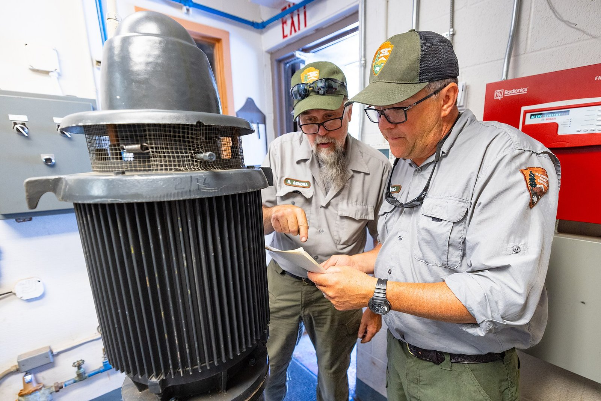
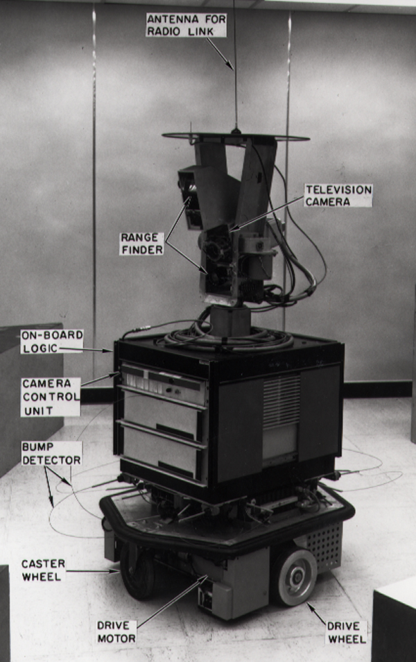
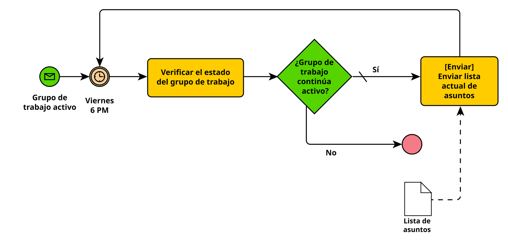

Sesión 2 · Unidad 2 · Bloque 1 de 3
Planificación automática clásica
De una meta a un plan que una máquina puede verificar
Sistemas Inteligentes · Especialización en Inteligencia Artificial · UNAL Manizales · 30 min
← Club de lectura Agenda Bloque 2 →
La imagen de fondo resume el bloque: un plan es una ruta trazada sobre el mapa antes de moverse, con los obstáculos a la vista. Ruta del bloque: un caso de MantenIA; cómo se describe un problema de planificación (STRIPS y PDDL); cómo se ejecuta un plan estado por estado; los componentes de un sistema de planificación; tres técnicas en panorama; y casos reales. Todo prepara el Laboratorio 2A, en el que cada pareja formalizará y resolverá este mismo tipo de problema.
Caso MantenIA
Una orden de trabajo que exige planificar
OT-512. La bomba 3 de la Planta Norte tiene una fuga en el sello. Debe volver a servicio hoy.
Meta: bomba 3 en servicioRecursos: Ana (certificada), Luis (no certificado), un sello en la bodegaReglas: bloquear y etiquetar antes de intervenir; solo personal certificado
Planificar: elegir y ordenar acciones para lograr la meta sin violar las reglas.

Un supervisor y un mecánico de mantenimiento revisan el esquema de una bomba antes de intervenir. NPS / Jacob W. Frank, dominio público, Wikimedia Commons
Seguimos con MantenIA, la empresa de la Sesión 1. En el Bloque 2 de esa sesión un agente despachador asignaba órdenes; hoy la pregunta es otra: una vez asignada la orden, ¿qué hay que hacer, y en qué orden?
El problema parece trivial para una persona con experiencia, pero tiene todos los ingredientes de la planificación: una meta, recursos limitados, acciones con condiciones y reglas que no se negocian. El bloqueo y etiquetado (en inglés, lockout/tagout) es un procedimiento de seguridad real: antes de intervenir un equipo, se desconecta su energía y se asegura con un candado personal.
Este mismo caso nos acompaña en los tres bloques: hoy como plan en PDDL; en el Bloque 2, planificado por un LLM; en el Bloque 3, como plan.md.
Qué es planificar
Planificar es buscar, con estados hechos de hechos
Estado inicial
(en ana base) (averiado bomba3) (encendido bomba3) (almacenado sello …)
acción
estado 1
acción
…
Meta
(en-servicio bomba3)
callejón sin salida
Como la búsqueda de la Sesión 1, pero ahora cada estado es un conjunto de hechos y cada acción dice cuándo se puede aplicar y qué cambia .
En la Sesión 1 vimos la solución de problemas como búsqueda en un espacio de estados, con A* como ejemplo. La planificación automática usa la misma idea, con una diferencia que la hace general: los estados no son nodos opacos sino conjuntos de hechos lógicos, y las acciones se describen de forma declarativa. Así, un mismo planificador sirve para mantenimiento, logística o misiones espaciales, sin programar un algoritmo nuevo para cada caso.
El callejón sin salida ilustra por qué el orden importa: por ejemplo, ir a la planta sin pasar por la bodega obliga a devolverse por el repuesto.
Historia
El origen: STRIPS, para el robot Shakey
Fikes y Nilsson (1971), SRI International
Cada acción se describe con precondiciones y efectos : lo que agrega y lo que elimina
Lo que la acción no menciona, no cambia

Shakey, el robot del SRI para el que se creó STRIPS. Foto: SRI International, CC BY-SA 3.0 , Wikimedia Commons
Shakey ya apareció en la Sesión 1 como ejemplo de arquitectura deliberativa. Hoy nos interesa el planificador que lo hacía deliberar: STRIPS, publicado por Richard Fikes y Nils Nilsson en 1971 en la revista Artificial Intelligence.
Su aporte perdura: representar el mundo como un conjunto de hechos y cada acción por tres listas: precondiciones, hechos que agrega y hechos que elimina. Lo que la acción no menciona se supone igual; así se esquiva el llamado problema del marco, tener que decir explícitamente todo lo que no cambia.
STRIPS
Una acción: precondiciones y efectos
reparar(técnico, equipo, repuesto, lugar)
Precondiciones
el técnico está en el lugar · el equipo está bloqueado y averiado · el técnico lleva un repuesto compatible · el técnico está certificado
Efectos
agrega: equipo reparado · elimina: equipo averiado, técnico lleva el repuesto
Bloqueo y etiquetado: candados «Danger – Locked out» en tres interruptores. darkday (Flickr), CC BY 2.0 , Wikimedia Commons
Las reglas del negocio y de seguridad se vuelven precondiciones : el plan no puede saltárselas.
Leer la acción en voz alta como una regla de trabajo: «para reparar, el técnico debe estar en el lugar, el equipo debe estar bloqueado y averiado, y el técnico debe llevar un repuesto compatible y estar certificado». Después del cambio, el equipo queda reparado, deja de estar averiado y el repuesto se consume.
Este es el mensaje para un público de gestión: las políticas de la organización (seguridad industrial, certificaciones, aprobaciones) se pueden escribir como precondiciones. Un planificador nunca producirá un plan que las viole, y un validador puede comprobarlo de forma automática.
PDDL
El dominio: qué acciones existen
(define (domain mantenia)
(:requirements :strips :typing)
(:types tecnico equipo repuesto lugar) ; …predicados y otras 4 acciones
(:action reparar
:parameters (?t - tecnico ?e - equipo ?r - repuesto ?l - lugar)
:precondition (and (en ?t ?l ) (ubicado ?e ?l ) (bloqueado ?e )
(averiado ?e ) (lleva ?t ?r ) (compatible ?r ?e )
(certificado ?t ?e ) )
:effect (and (reparado ?e ) (not (averiado ?e ))
(not (lleva ?t ?r )))))PDDL (McDermott et al., 1998) es el lenguaje estándar de la Competencia Internacional de Planificación. El dominio se escribe una vez y sirve para muchos problemas.
Esta es la misma acción de la diapositiva anterior, escrita en PDDL. No hace falta memorizar la sintaxis: el laboratorio trae el andamiaje. Lo importante es reconocer las tres partes: parámetros, precondiciones y efectos, y que «not» en los efectos significa «elimina este hecho».
El dominio completo de MantenIA tiene cinco acciones: desplazarse, retirar repuesto, bloquear, reparar y liberar. Está en la carpeta ejemplo_pddl de la sesión. PDDL se creó en 1998 para la primera competencia internacional de planificación y desde entonces es el estándar común de la disciplina.
PDDL
El problema: objetos, estado inicial y meta
(define (problem bomba-3)
(:domain mantenia)
(:objects ana luis - tecnico bomba3 - equipo sello - repuesto
base bodega planta-norte - lugar)
(:init (en ana base ) (en luis base )
(ubicado bomba3 planta-norte ) (encendido bomba3 ) (averiado bomba3 )
(almacenado sello bodega ) (compatible sello bomba3 )
(certificado ana bomba3 )) ; Luis no está certificado
(:goal (en-servicio bomba3 ) )) El problema cambia cada día: otros equipos, otros técnicos, otra meta. El dominio no se toca.
El problema dice qué objetos hay hoy, qué es cierto al empezar y qué queremos lograr. Fíjense en lo que no dice: no dice cómo lograrlo. Encontrar el cómo es trabajo del planificador.
Detalle intencional: Luis está disponible, pero no está certificado para la bomba 3. Ningún plan válido puede ponerlo a bloquear o reparar ese equipo. En el Bloque 2 veremos qué pasa cuando un LLM no respeta esa regla.
Ejecución del plan
El plan, estado por estado
Plan de Fast Downward
1 (desplazarse ana base bodega)
2 (retirar-repuesto ana sello bodega)
3 (desplazarse ana bodega planta-norte)
4 (bloquear ana bomba3 planta-norte)
5 (reparar ana bomba3 sello planta-norte)
6 (liberar ana bomba3 planta-norte)
Estado inicial S0
(en ana base) (en luis base) (almacenado sello bodega) (encendido bomba3) (averiado bomba3)
Meta: (en-servicio bomba3)
Estado S1 · tras el paso 1
(en ana base) (en ana bodega) (en luis base) (almacenado sello bodega) (encendido bomba3) (averiado bomba3)
Estado S2 · tras el paso 2
(en ana bodega) (en luis base) (lleva ana sello) (almacenado sello bodega) (encendido bomba3) (averiado bomba3)
Estado S3 · tras el paso 3
(en ana bodega) (en ana planta-norte) (en luis base) (lleva ana sello) (encendido bomba3) (averiado bomba3)
Estado S4 · tras el paso 4
(en ana planta-norte) (en luis base) (lleva ana sello) (encendido bomba3) (averiado bomba3) (bloqueado bomba3)
Estado S5 · tras el paso 5
(en ana planta-norte) (en luis base) (lleva ana sello) (averiado bomba3) (bloqueado bomba3) (reparado bomba3)
Estado S6 · tras el paso 6
(en ana planta-norte) (en luis base) (encendido bomba3) (bloqueado bomba3) (reparado bomba3) (en-servicio bomba3)
✓ La meta se cumple y el validador acepta el plan.
precondición usada se elimina se agrega meta
Hechos fijos: (ubicado bomba3 planta-norte) · (compatible sello bomba3) · (certificado ana bomba3)
Este es el plan que encontró Fast Downward para el problema anterior, y lo aceptó el validador de Unified Planning (lo comprobamos al preparar la clase; los archivos están en ejemplo_pddl). Avanzar paso a paso: en cada uno, las fichas azules son precondiciones que la acción usa, las rojas tachadas son hechos que la acción elimina y las verdes son hechos nuevos.
Momentos para detenerse. Paso 4: bloquear apaga el equipo; el hecho «encendido» desaparece y aparece «bloqueado», que es justo la precondición que necesita reparar. Paso 5: el repuesto se consume. Paso 6: liberar quita el bloqueo, enciende el equipo y logra la meta.
Nótese que el planificador eligió a Ana y no a Luis sin que nadie se lo dijera: las precondiciones de certificación descartan a Luis.
Arquitectura
Los componentes de un sistema de planificación
Modelo dominio + problema (PDDL)
Planificador busca un plan (p. ej., Fast Downward)
Validador comprueba el plan (p. ej., VAL)
Ejecutor personas, robots o sistemas
Monitoreo ¿lo observado = lo esperado?
replanificar
Cuatro piezas con responsabilidades separadas. El modelo describe el mundo; el planificador busca un plan; el validador comprueba de forma independiente que el plan es aplicable y logra la meta; el ejecutor lo lleva a cabo. Separar al validador del planificador es una buena práctica de ingeniería: quien genera no es quien certifica.
VAL, desarrollado por Howey, Long y Fox, es el validador clásico de la comunidad de planificación; en el laboratorio usaremos el validador incluido en Unified Planning, que cumple la misma función.
El monitoreo cierra el ciclo: si al ejecutar lo observado no coincide con lo esperado, se replanifica desde el estado real. Esta separación entre generar y verificar es la misma idea que retoma el marco LLM-Modulo del club de lectura.
Técnicas · panorama
¿Cómo busca el planificador? Relajando el problema
Mundo real
Al desplazarse, Ana deja la base: los efectos que eliminan hechos obligan a ordenar bien las acciones.
(en ana base) (en ana bodega)
Problema relajado
Se ignoran los efectos que eliminan: Ana puede «estar» en todas partes. Resolverlo es fácil y su costo estima la distancia a la meta.
(en ana base) (en ana bodega) (en ana planta-norte)
Esa estimación guía la búsqueda, como la heurística de A* en la Sesión 1. Es la idea del planificador FF (Hoffmann y Nebel, 2001).
Solo la idea, sin algoritmos. Un planificador busca entre muchísimas combinaciones de acciones; para no perderse necesita estimar qué tan lejos está de la meta desde cada estado. El truco más influyente es relajar el problema: ignorar los efectos que eliminan hechos. En el mundo relajado nada se pierde, así que es fácil encontrar un plan aproximado; contar sus acciones da una estimación útil, aunque no exacta, de la distancia real.
Es el mismo papel que cumplía la heurística en A*: orientar la búsqueda hacia la meta. El planificador FF de Hoffmann y Nebel (2001) popularizó esta heurística; Fast Downward, de Helmert (2006), el planificador del laboratorio, implementa esta y otras heurísticas.
Técnicas · panorama
Planificación jerárquica: descomponer la tarea
Restablecer la bomba 3
Preparar
Intervenir con seguridad
Cerrar
desplazarse (a bodega)
retirar- repuesto
bloquear
reparar
liberar
Los métodos dicen cómo descomponer cada tarea: recetas del oficio en lugar de búsqueda a ciegas (Erol, Hendler y Nau, 1994).
La planificación jerárquica, o HTN por sus siglas en inglés (Hierarchical Task Networks), no busca entre acciones sueltas: parte de una tarea de alto nivel y la descompone con métodos, que son recetas del tipo «para restablecer un equipo: preparar, intervenir con seguridad y cerrar». Así razona un jefe de mantenimiento, y por eso HTN se usa mucho en aplicaciones reales: permite codificar el conocimiento del oficio y reduce la búsqueda.
Por simplicidad, el árbol omite el segundo desplazamiento, de la bodega a la planta. Lo retomaremos en el Bloque 3: la sección de pasos de un plan.md, organizada en fases, es una descomposición jerárquica escrita en lenguaje natural.
Técnicas · panorama
Cuando el mundo no coopera: monitorear y replanificar
Esperado tras el paso 5
(reparado bomba3) (bloqueado bomba3)
Observado
(reparado bomba3) la prueba muestra fuga: el sello vino defectuoso
El ejecutor compara lo observado con lo esperado
Si difieren, se replanifica desde el estado real : conseguir otro sello y repetir
Planificar y actuar se entrelazan (Ghallab, Nau y Traverso, 2025)
La planificación clásica supone un mundo predecible: las acciones hacen exactamente lo que dicen. La realidad no coopera: un repuesto viene defectuoso, un técnico se enferma, un equipo falla de otra manera. Por eso los sistemas reales monitorean la ejecución: después de cada paso comparan el estado observado con el esperado y, si no coinciden, replanifican desde donde están, no desde el principio.
El libro de Ghallab, Nau y Traverso (2025) defiende justamente esto: un sistema inteligente no planifica una vez y ejecuta a ciegas; actúa, observa, revisa y vuelve a planificar. Este mismo episodio del sello defectuoso aparece en el Bloque 3, registrado en el plan.md.
Caso real · 1999
Remote Agent toma el mando de Deep Space 1
17–21 de mayo de 1999: «el primer software de IA en comandar una nave espacial» (JPL)
Recibía objetivos , no comandos: «toma fotos de estos asteroides y mantén el motor encendido el 90 % del tiempo»
Planificador, ejecutivo y diagnóstico: ante una falla simulada (la cámara no se apagaba), replanificó a bordo
Un error nunca visto en tierra detuvo la primera corrida; la segunda completó el 100 % de los objetivos
Deep Space 1 (ilustración, PIA04242). NASA/JPL, dominio público, Wikimedia Commons
Entre el 17 y el 21 de mayo de 1999, el software Remote Agent, de NASA Ames y JPL, comandó la sonda Deep Space 1. JPL lo anunció así: «Artificial intelligence software is in primary command of a spacecraft for the first time». Ese año fue co-ganador del premio Software of the Year de NASA.
Los operadores le daban objetivos en lugar de secuencias de comandos con hora exacta, por ejemplo: «durante la próxima semana toma fotos de estos asteroides y mantén el motor encendido el 90 % del tiempo». Integraba un planificador y programador de actividades, un ejecutivo que llevaba a cabo el plan y Livingstone, un sistema de diagnóstico y recuperación basado en modelos. Si el ejecutivo no podía reparar el plan, pedía uno nuevo al planificador: el ciclo de monitoreo y replanificación de este bloque, en una nave real.
Dos detalles para gestores. Primero, una falla simulada (el interruptor de la cámara «atascado» en encendido) obligó a replanificar a bordo considerando la menor energía disponible, y funcionó. Segundo, un error de concurrencia en el ejecutivo, que no había aparecido en miles de pruebas en tierra, detuvo la primera corrida cuando se había cumplido cerca del 70 % de los objetivos; con un escenario nuevo de seis horas se completó el 100 %. Matiz: no fue «sin supervisión humana», como dicen algunas fuentes secundarias: el equipo lo vigiló las 24 horas. Fuentes: informe de validación de JPL (Bernard et al., 2000) y Nayak et al. (1999).
Caso real · 2004
Planificar el día de los rovers de Marte
Rover de exploración de Marte (ilustración, PIA04413). NASA/JPL/Cornell University, Maas Digital LLC; dominio público, Wikimedia Commons
MAPGEN (NASA Ames y JPL) armaba cada día, desde la Tierra, el plan de actividades de Spirit y Opportunity
Iniciativa mixta: el planificador propone y vigila las restricciones; una persona decide
Lección: el modo «planificar todo» casi no se usaba: sus planes no se podían explicar en la reunión de aprobación
MAPGEN combinó la herramienta de planificación de actividades APGEN, de JPL, con el planificador por restricciones EUROPA, de NASA Ames. Cada sol (un día marciano), el equipo tenía como máximo 19,5 horas para producir los comandos del día siguiente; un plan podía tener de cientos a miles de actividades, y una sola persona, el planificador táctico, era responsable de él. Según estimaciones subjetivas de los científicos y gestores de la misión, el retorno científico aumentó entre 20 y 40 % frente al método manual de Mars Pathfinder (Bresina et al., 2005).
La lección más valiosa la reportan los propios desarrolladores: el modo de generar el plan completo de forma automática casi no se usaba, porque los planes resultantes no tenían una estructura intuitiva y el responsable no podía explicarlos en la reunión de aprobación. Lo que más valoraban los usuarios era replanificar, deshacer y hacer cumplir restricciones. Es exactamente la razón de ser del plan.md del Bloque 3: un plan que una persona pueda leer, explicar y aprobar.
Hoy la planificación también va a bordo: desde el 5 de octubre de 2023, el rover Perseverance usa un planificador que reajusta su agenda si las actividades terminan antes o después de lo previsto (JPL, Parjan y Gaines, 2024).
Organizaciones
Componer procesos de negocio con un planificador

Un proceso de negocio en notación BPMN: evento, tarea, decisión y documento. VARGUX, CC BY-SA 3.0 , Wikimedia Commons
Cada servicio o transacción es una acción : lo que necesita son precondiciones; lo que produce, efectos
La meta es el estado final deseado; el plan es el proceso
SAP: 404 tipos de objetos de negocio y 2 418 transacciones, traducidos a PDDL (Hoffmann, Weber y Kraft, 2012)Matiz: quedó como prototipo de investigación
La composición de procesos es planificación: si cada servicio o transacción se describe con lo que necesita (precondiciones) y lo que produce (efectos), un planificador puede encadenarlos para llegar a un estado final deseado. Sirin, Parsia, Wu, Hendler y Nau (2004) lo hicieron con servicios web y el planificador jerárquico SHOP2; en Granada, el grupo de González-Ferrer, Fernández-Olivares y Castillo (2013) tradujo modelos de procesos de negocio a dominios HTN.
El caso más ambicioso fue en SAP (Hoffmann, Weber y Kraft, JAIR 2012). El modelo de estados y acciones de su software empresarial, con 404 tipos de objetos de negocio y 2 418 transacciones, se tradujo a una variante de PDDL; un planificador derivado de FF generaba el proceso a partir del cambio de estado que quería el experto de negocio. Matiz honesto, de los mismos autores: no llegó a producto, y el piloto con un cliente se canceló con la crisis financiera de 2008 y 2009.
En la industria también hay despliegues: en Xerox, un planificador temporal controló prototipos de impresoras modulares a 220 páginas por minuto (Ruml et al., JAIR 2011).
Síntesis
Lo que nos llevamos de este bloque
Modelo hechos, acciones con precondiciones y efectos (PDDL)
Planificador busca, guiado por heurísticas o por recetas (HTN)
Validador quien genera no es quien certifica
Monitoreo si el mundo no coopera, se replanifica
Las reglas de la organización se vuelven precondiciones que ningún plan válido puede violar.
Trabajo independiente 1
Su proceso como problema de planificación
Elija un proceso de su organización y modélelo como un problema de planificación:
3–4 acciones con precondiciones y efectos (en PDDL o en una tabla)
El estado inicial y la meta
Un plan trazado a mano, estado por estado
Una regla de negocio convertida en precondición
El enunciado completo está en trabajo_independiente.md. Sugerir procesos con reglas claras: aprobación de compras, despacho de pedidos, incorporación de un empleado nuevo, cierre contable. El TI-2 usará este mismo problema para poner a prueba a un LLM.
Quien quiera, puede comprobar su modelo con un planificador real en editor.planning.domains, sin cuenta ni instalación: el botón se llama «Solver» (los tutoriales viejos mencionan un botón «Solve» que ya no funciona). Advertir que los nombres con tildes o ñ hacen fallar al planificador sin mostrar error.
A continuación · 35 min
Laboratorio 2APlanificar una operación en PDDL
Formalizar en PDDL una orden de mantenimiento de MantenIA, resolverla con Unified Planning y Fast Downward, y validar el plan.
Notebook autocontenido en VS Code: toda la explicación está dentro del ejercicio.
← Volver a la agenda Bloque 2 →
Dar paso al laboratorio (35 min). Lo que no alcance a terminarse en clase se completa como trabajo independiente. Después viene el Bloque 2: LLMs y planificación.
Referencias del bloque 1
Para profundizar
Fikes, R. E. y Nilsson, N. J. (1971). STRIPS: A new approach to the application of theorem proving to problem solving. Artificial Intelligence , 2(3–4), 189–208. PDF
McDermott, D. et al. (1998). PDDL—The Planning Domain Definition Language , v. 1.2. Informe técnico CVC TR-98-003, Yale. PDF
Erol, K., Hendler, J. y Nau, D. S. (1994). HTN planning: Complexity and expressivity. AAAI-94 , 1123–1128. PDF
Hoffmann, J. y Nebel, B. (2001). The FF planning system. JAIR , 14, 253–302. JAIR
Helmert, M. (2006). The Fast Downward planning system. JAIR , 26, 191–246. JAIR
Howey, R., Long, D. y Fox, M. (2004). VAL: Automatic plan validation… ICTAI 2004 , 294–301. Manuscrito · Código
Ghallab, M., Nau, D. y Traverso, P. (2025). Acting, Planning, and Learning . Cambridge University Press. Editorial
Russell, S. y Norvig, P. (2021). Artificial Intelligence: A Modern Approach (4.ª ed.), cap. 11. Pearson. Contenido
Micheli, A. et al. (2025). Unified Planning: Modeling, manipulating and solving AI planning problems in Python. SoftwareX , 29, 102012. PDF abierto
JPL (1999, 17 de mayo). Computer program assumes spacecraft command. Comunicado (archivo)
Bernard, D. E. et al. (2000). Remote Agent Experiment: DS1 Technology Validation Report . JPL Publication 00-10. PDF (NASA PDS)
Nayak, P. P. et al. (1999). Validating the DS1 Remote Agent Experiment. i-SAIRAS-99 . PDF
Bresina, J. L., Jónsson, A. K., Morris, P. H. y Rajan, K. (2005). Activity planning for the Mars Exploration Rovers. ICAPS 2005 . PDF
Parjan, S. y Gaines, D. (2024). «In OBP we trust»: Verification and validation of the M2020 On Board Planner. IEEE Aerospace Conference . PDF
Hoffmann, J., Weber, I. y Kraft, F. M. (2012). SAP speaks PDDL. JAIR , 44, 587–632. JAIR
Sirin, E., Parsia, B., Wu, D., Hendler, J. y Nau, D. (2004). HTN planning for Web Service composition using SHOP2. Journal of Web Semantics , 1(4), 377–396. DOI
Ruml, W., Do, M. B., Zhou, R. y Fromherz, M. P. J. (2011). On-line planning and scheduling: An application to controlling modular printers. JAIR , 40, 415–468. JAIR
← Club de lectura Volver a la agenda Bloque 2 →
.jpg){kind=link}

.jpg){kind=link}